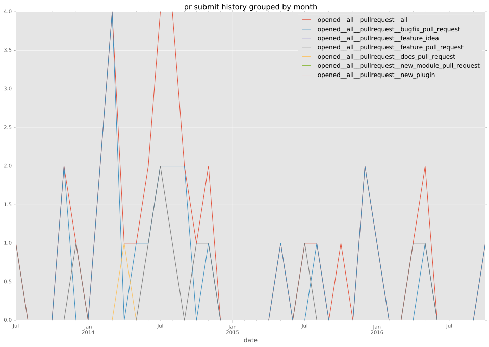
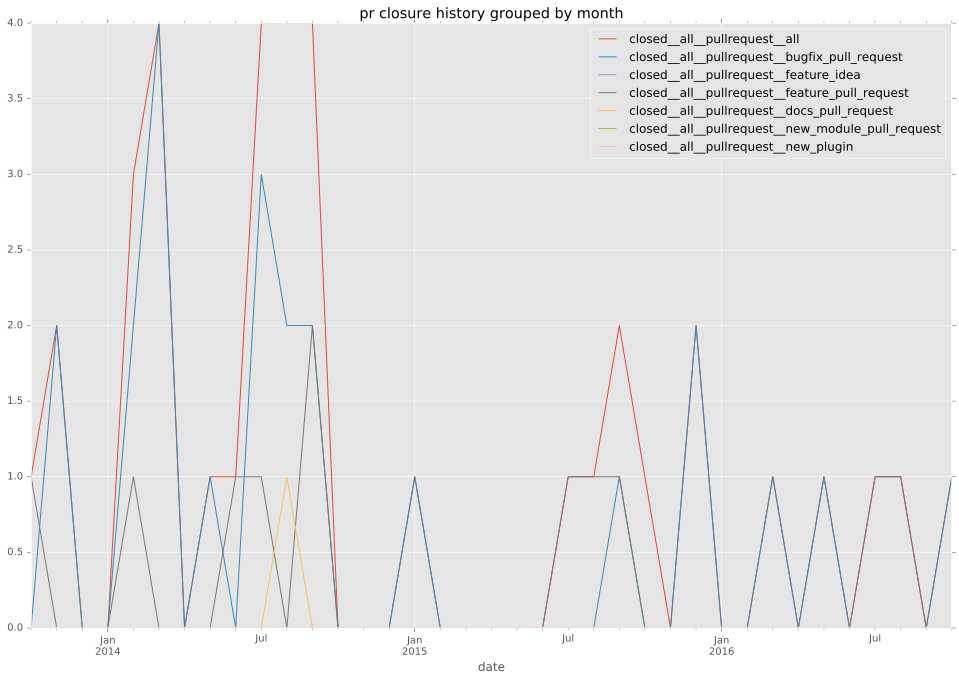

authors
- bcoca
- astorije
maintainers
- ansible
contributors
- bcoca : 80 commits
- astorije : 42 commits
- mscherer : 16 commits
- mpdehaan : 8 commits
- quoing : 7 commits
- jctanner : 2 commits
- gundalow : 2 commits
- techtonik : 1 commits
- kitwestneat : 1 commits
- abadger : 1 commits
total issue counts
unknown: 2
feature pull request: 12
docs report: 1
pullrequest: 36
docs pull request: 1
bugfix pull request: 21
feature idea: 5
issue: 19
bug report: 13
issue history
pullrequest history


days open by issue type
bugfix pull request
count: 32
std: 20.3579856726
min: 0
max: 79
median: 0.0
mean: 8.5625
all
count: 67
std: 91.9334803665
min: 0
max: 530
median: 2.0
mean: 44.1940298507
pullrequest
count: 0
std: nan
min: nan
max: nan
median: nan
mean: nan
docs pull request
count: 2
std: 0.0
min: 101
max: 101
median: 101.0
mean: 101.0
docs report
count: 1
std: nan
min: 13
max: 13
median: 13.0
mean: 13.0
feature pull request
count: 17
std: 106.054266076
min: 0
max: 311
median: 48.0
mean: 86.4117647059
feature idea
count: 3
std: 54.3691088763
min: 0
max: 106
median: 32.0
mean: 46.0
issue
count: 0
std: nan
min: nan
max: nan
median: nan
mean: nan
bug report
count: 10
std: 169.616724804
min: 0
max: 530
median: 2.5
mean: 86.5
closures grouped by total days open